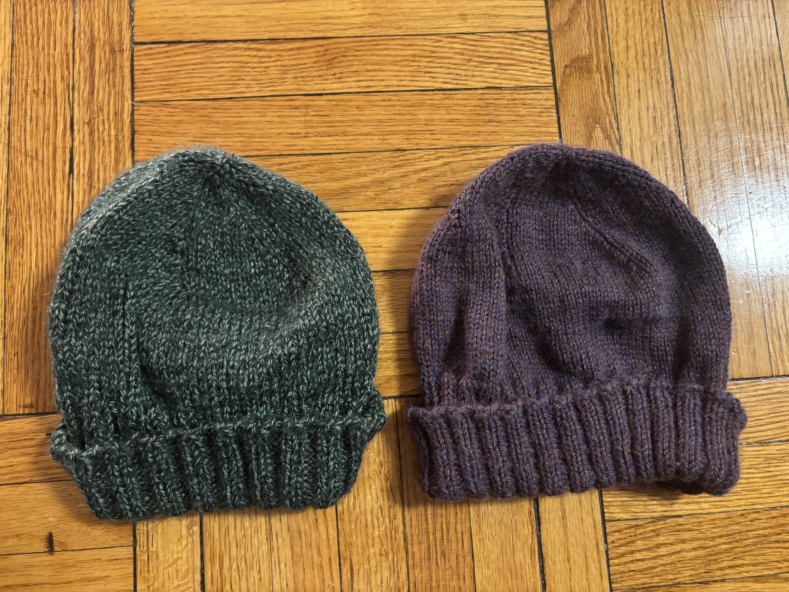
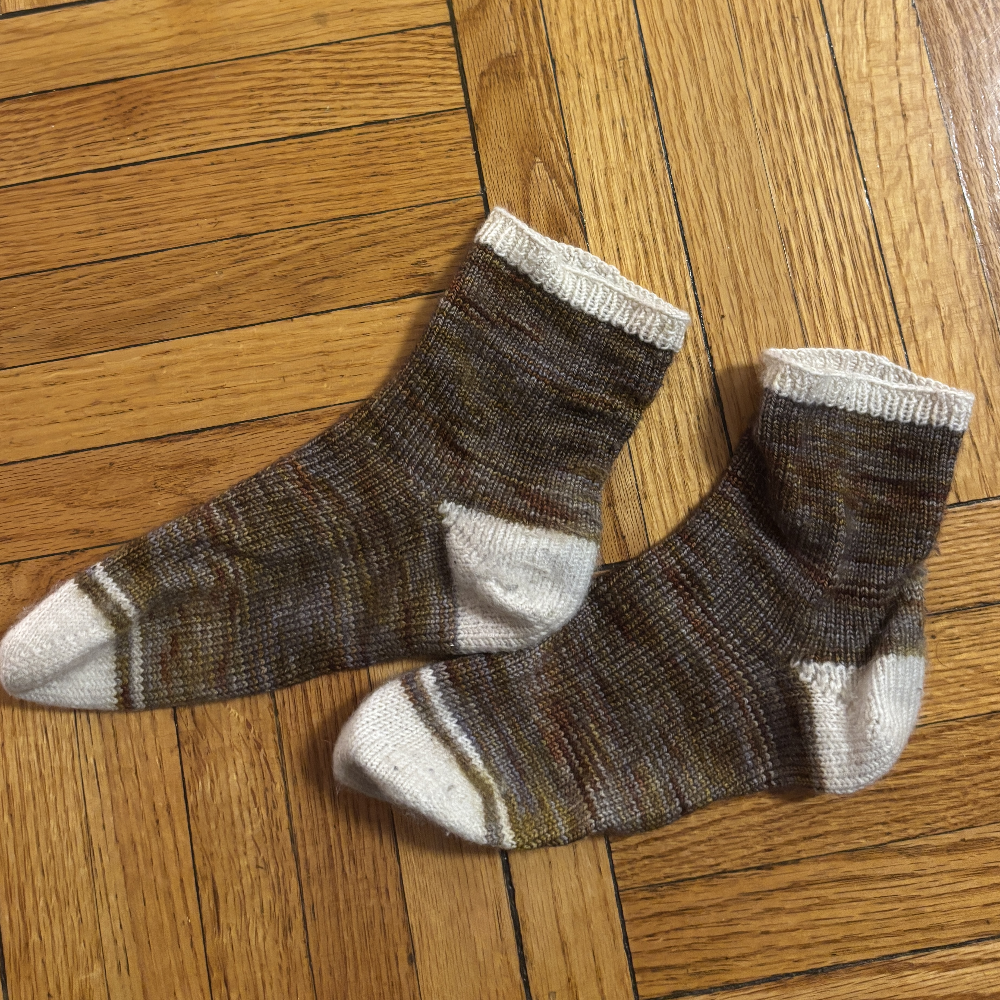

Winter Gear

My two hats
I really like making hats; they are a good travel project and easy to gift
(these measurements do not need to be as specific as with socks).
 Fingerless gloves
Fingerless gloves
I am from Texas, and it gets soo cold here. These have been a lifesaver.
Socks


Green and brown socks
My first and second pairs of socks.
 Colorwork socks
Colorwork socks
I made this third pair of socks several months later. The sheer number of color
changes made this very tedious--never again! (I actually forgot the last stripe on the
second sock I made. It will probably never be fixed.)